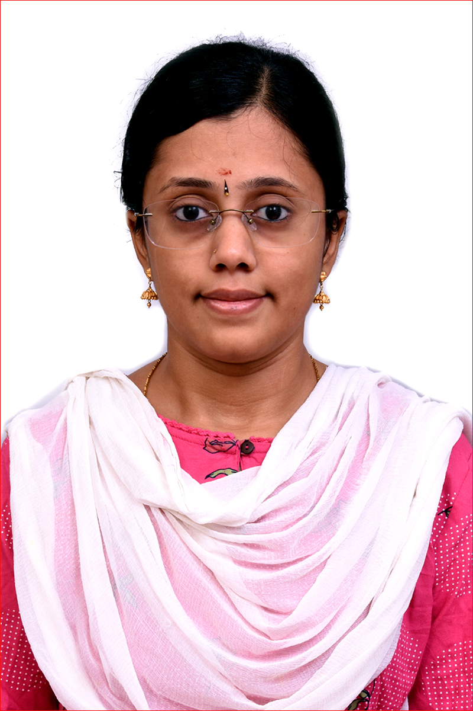

Ishwarya Murali

Senior Software Developer
Summary
Comprehensive 5+ software engineering experience in Oracle backend.
Have developed applications for multiple functions such as trading, clearing obligations, cash settlements, etc.
Have worked in Agile, Scrum and Kanban methodologies.
Strong communication & leadership skills with an ability to interact with business users and lead business projects, and to train developers.
Skills
- Requirement Analysis
- Programming Language (PL/SQL, Java)
- Unix and Linux
- SDLC (Agile and Waterfall)
- Oracle 11g & 12c
- Oracle Forms and Reports
- Source Control Management (Git,Bitbucket)
Experience
Senior Software Developer / Standard Chartered Global Business Serices, Chennai
Apr 2020 – Nov 2022
- Communicating with the internal stakeholders (5) and gathering the necessary requirement details for various projects assigned.
- Analyzing the requirements for feasibility for the application to adopt & initiate solutions.
- Completed developing 30 projects (with coding standards) in the past 2.5 years and achieved 95 % defect free & unit testing at a minimal level in at least 90% of the projects; Packaging of components for production rollout with zero issues.
- Conducted 8 knowledge transfer sessions for 4 new joiners to ensure necessary functional understanding and conducted code reviews for other projects.
- Resolved 20 project issues by bridging the gap between stakeholders and team.
Accomplishments:
- Led the ‘Pledging and Revocation of Stocks’ project & delivered it with 100% quality making the company one of the first among the market players to deliver the product swiftly and without any defects.
- Developed ‘Cash Netting’ feature independently to provide a correct report at trade level to important clients for Indian Market, saving operations manual time [3 hours of every day’s work] during obligation process of securities.
Software Developer / Standard Chartered Global Business Serices, Chennai
Jun 2017 – Mar 2020
- Developed 20 projects, achieved 90% defect free in all & handled 40+ production rollouts.
- Completed 30 implementation releases single-handedly with 0% implementation issues helping internal stakeholders to release the products on-time to the clients during Shortage of team members.
Accomplishments:
- Developed ‘INR to INR’ feature in the team of 3 to provide automated entries for transactions to platinum clients for Indian Market, saving operations manual time [1.5 hours of every day’s work] during actual transactions.
- Completed documentation of the entire process for production rollout that benefited the team to avoid issues during implementation.
Education
Bachelor of Engineering / Computer Science and Engineering
Thiagarajar College of Engineering, Madurai
Jul 2013 - Apr 2017
- CGPA: 8.87/10, First class with distinction.
-
Undergraduate Project:
Securing Network using Attack Graphs
Designed and implemented an attack graph; Completed the automation for detection of attacks that are happening in the system; Achieved the automation of detection with 80% efficiency; Implemented using C language and test was done using attack graph tool.
Additional Information
- Legal Status: Lawful Permanent Resident in US (Green Card).
-
Awards:
- Secured ‘Outstanding Performer Award’, Standard Chartered, Sept 2022
- Secured ‘Valued Behavior’ award for showing excellent valued behavior, Standard Chartered, Jun 2019
- Secured ‘Think Client’ award for continuous learning and performing, Standard Chartered, Jun 2018
- Won Ms. Ryla award among 50 participants, Ryla Personality Development Camp, Kadavur, Dec 2014
-
Certificates:
- Financial Markets: A Beginner's Module – NCFM Certification from NSE, Feb 2019
- Cambridge English level 1 certificate (Business Vantage), Cambridge English Language Assessment, May 2015
-
Volunteering Activity:
- Bhumi NGO: Teaching Mathematics for 6th and 7th grade students (25), Nov 2021 – Apr 2022
- Rotaract club activity: Thiagarajar College of Engineering: Taught computer science for 7th and 8th grade students (35), Feb 2016
- Participated in the two Marathons for the Cause of Saving Water and Cause of Corruption Free Society, Physical Education Department, Thiagarajar College of Engineering, Mar 2013 & Mar 2014 respectively.